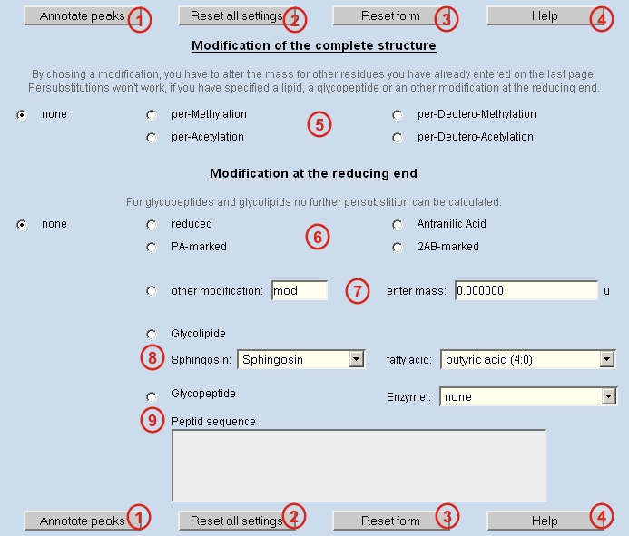

Annotate Peaks:
Calculation for all mass values from the peaklist below is started using all parameters already set on the pages "mass", "resdiue", "ion/charge" and "modifications".
Reset all settings:
All settings manually done on the pages "mass", "resdiue", "ion/charge" and "modifications" are cleared and default settings are set.
Reset form:
All settings manually done on this form are cleared and default settings are set.
Help:
Starts Glyco-Peakfinder helpfiles.
Specify modification of the whole structure:
The modification of the whole structure can be specified here.
Modifications at the reducing end, labelling:
The labeling at reducing end can be specified here.
Modifications at the reducing end, other modification:
If the used modification at the reducing end is not given in the list (see 6), another modification can be specified. Additionally, the increment mass must be entered.
Modifications at the reducing end, glycolipids:
To calculate glycolipids the lipid part can be specified by selecting Sphingosin and fatty acid part. A fragmentation of the lipid part is not foreseen.
Modifications at the reducing end, glycopeptides:
For calculation of glycopeptides the peptide sequence can be entered in single letter code. In an upcoming version an enzymatic digest for the peptide will be assumed. Fragmentation of the peptide part is not foreseen.